1.SINIF

Mucit Gençler ile Görevimiz Aya Yolculuk 🌖 Beceri Takımlarımızdan Mucit Gençler Ay'da su arama görevinde kullanılacakları araçlarını tasarlamak için çalışmalarına başladı. Aynı zamanda Ay yüzeyine yapılan insanlı ilk uzay yolculuğunu VR ortamında deneyimleyerek Ay yürüyüşü yaptılar.
Our Mission with Inventors is Journey to the Moon
Inventor Youngsters from our Skill Teams started to work on designing their vehicles to be used for the discovery of water on the Moon. At the same time, they experienced the first human spaceflight to the Moon's surface in a VR environment and walked on the Moon.

 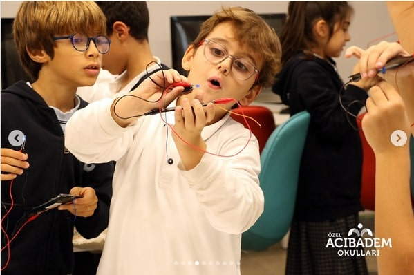
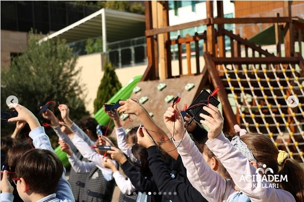
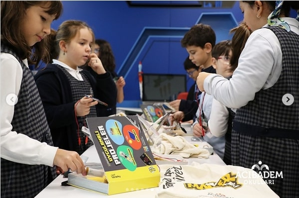
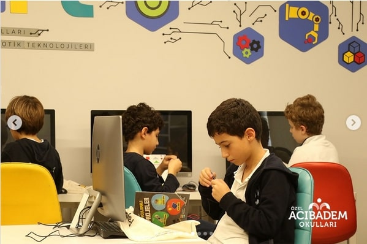
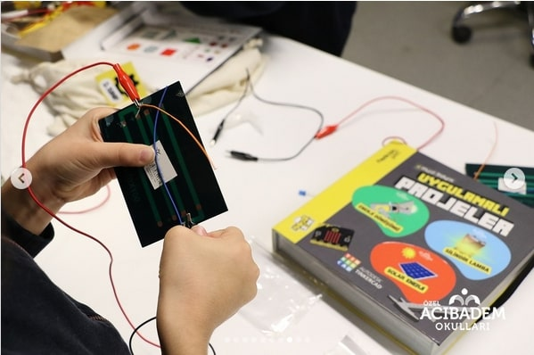
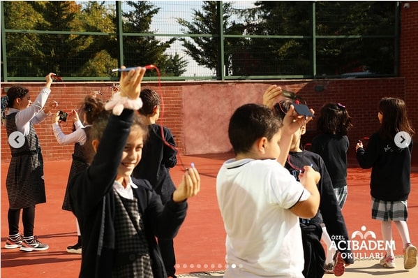
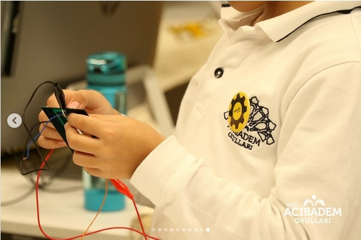
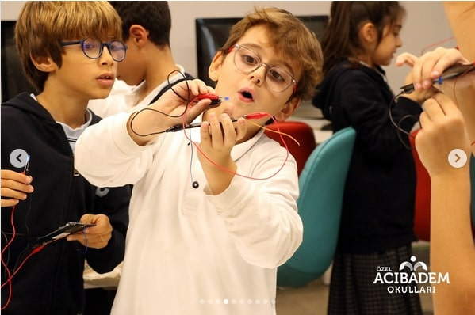
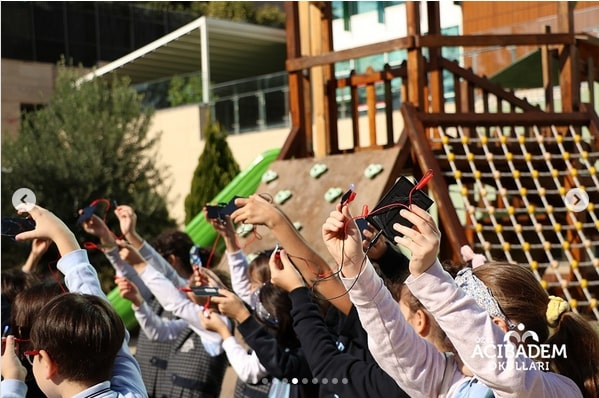
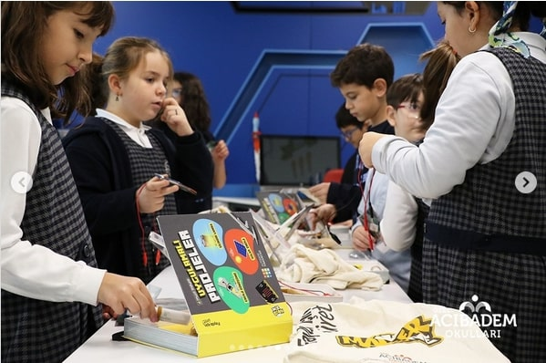
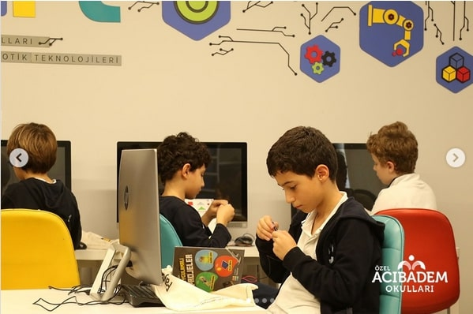
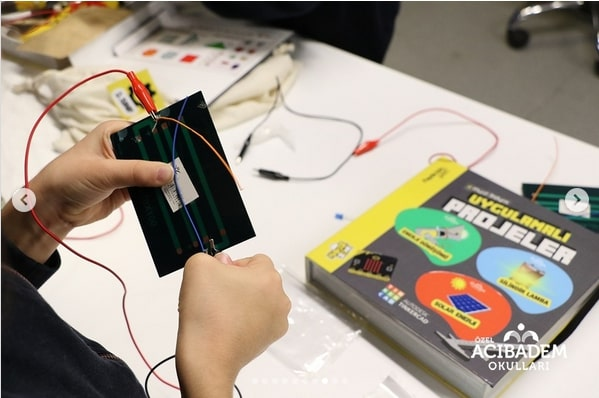
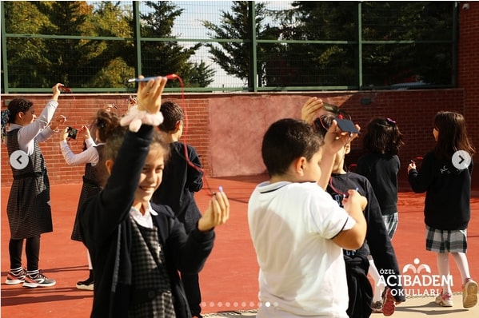
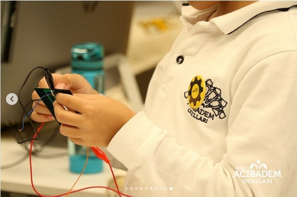